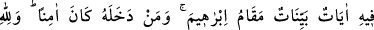
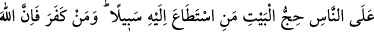
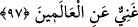

Efendimiz de: “Mescid-i Haram’dır. Sonra da Beyt-i Makdis kurulmuştur.” diyerek
cevap verdi. İkisi arasında ne kadar zaman vardır? diye sorulunca da: “Kırk sene”
demiştir.[68]
Rivâyet edilir ki: Allah Teâlâ, Arş’ın altında bir beyt yaratmış -ki bunun adı Beyt-i
Ma’mûr’dur- ve meleklere bu evi tavâf etmelerini emretmişti. Sonra, yeryüzündeki
meleklere de Beyt-i Ma’mûr’un benzeri bir ev inşâ etmelerini emretti. İnşâ edince,
Allah Teâlâ, yeryüzündeki herkese, göktekiler Beyt-i Ma’mûr’u nasıl tavâf ediyorsa,
kendilerinin de bu evi öylece tavâf etmelerini emretti.
Rivâyete göre; melekler, bu evi Âdem’in yaratılmasından iki bin sene önce inşâ
ettiler. Âdem yeryüzüne indirilince melekler Âdem’e: “Bu evi tavâf et. Biz senden
önceki iki bin senelik süre zarfında bunu tavâf ettik” dediler. Âdem ve Âdem’den
sonrakiler tâ Nûh (a.s.) zamânına kadar Kâbe’yi tavâf ettiler. Allah, Tûfanı murad
edince bu ev dördüncü semâya nakledildi. İşte bu ev, gök meleklerinin tavâf ettiği;
Kâbe’nin tam üstündeki Beyt-i Ma’mûr’dur.
İbn Abbas (r.a.)’tan mervîdir ki: Âdem’in yeryüzünde ilk kurduğu ev bu evdir.
Bu rivâyetlere göre Kâbe inşasının İbrâhîm’e nisbet edilmesi, İbrâhîm Kâbe’yi ilk
inşâ ettiği için değil, bilakis temellerini yükseltip kaybolan mahallini ortaya çıkardığı
içindir. Bilindiği gibi, Kâbe’nin yeri Tûfan sebebiyle belirsizleşmiş; Allah, Cibrîl’i
İbrâhîm (a.s.)’a gönderip, Kâbe’nin yerini göstererek onu inşâ etmesini emredinceye
kadar gizli kalmıştır. Kâbe’nin inşâ edilmesini emreden Allah Teâlâ, bu emri tebliğ edip
yerini gösteren Cibrîl, binâ eden İbrâhîm (a.s.), bu inşaatta yardım ve çıraklık eden de
İsmâîl (a.s.) olduğu için, yeryüzünde Kâbe’den daha şerefli bir binâ olmadığı
söylenmiştir.
“Mübârek ve âlemlere hidâyet kaynağı olan evdir.” Yani bu ev hacceden, umre
yapan, Kâbe’de îtikâfa giren ve Kâbe’yi tavâf edenler için hâsıl olan büyük sevaptan ve
günahların bağışlanmasından dolayı, hayrı ve yararı çok olan Mekke’deki evdir.
Âlemlere hidâyet oluşu ise; bu evin, herkesin kıblesi ve ibâdetgâhı olması
sebebiyledir. Ayrıca bu evde Cenâb-ı Hakk’ın yüce kudretine ve sonsuz hikmetine
delâlet eden hayretâmiz âyetler vardır.
97. Orada apaçık nişâneler, (ayrıca) İbrâhîm’in makamı vardır. Oraya giren
emniyette olur. Yoluna gücü yetenlerin o evi haccetmesi, Allah’ın insanlar üzerinde
bir hakkıdır. Kim inkâr ederse bilmelidir ki, Allah bütün âlemlerden müstağnîdir.